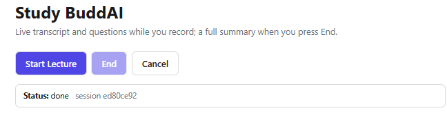
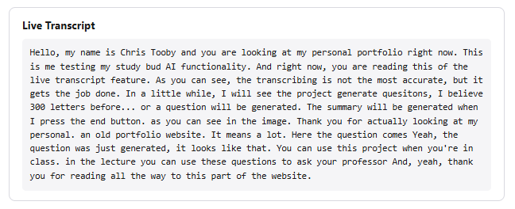
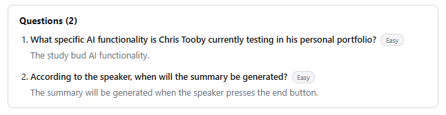
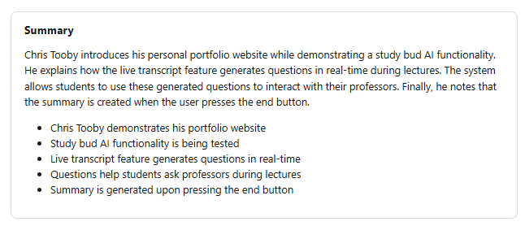

About | Experience | Projects | Baking
Tags: Python, FastAPI, React, Vite, faster-whisper, Ollama, Server-Sent Events
What it is. Study BuddAI is a lecture transcription and study assistant web app I built on my own. It records microphone audio in short chunks, transcribes each chunk live as you speak, generates comprehension questions from the transcript as it grows, and produces a full summary of the whole lecture when you press End. Recently, I have been able to bring my PC to college. This means that I have the resources to run a local large language model, so I can now generate questions and summaries without sending any data to the cloud, or incurring any API costs.
How I built it. The frontend is React and Vite. It uses the browser's MediaRecorder API to capture roughly five-second audio chunks back-to-back and upload them to the backend in order, so the audio has no gaps. The backend is Python with FastAPI. Each chunk is transcribed by a local faster-whisper model (large-v3-turbo), and a local large language model (Qwen3 served by Ollama) writes one or two questions about each new passage of transcript and the final end-of-lecture summary. The growing transcript, the questions, and the summary are streamed to the browser over Server-Sent Events, and the server sends a full snapshot of the current state on every reconnect so a dropped connection resyncs cleanly.
Code: github.com/ctutor99/Study-BuddAI
A short run of the app: I recorded myself talking about this portfolio, and Study BuddAI transcribed it live, generated questions as I spoke, and summarized the whole thing when I pressed End.




© 2026 Chris Tutor | ctutor@usc.edu